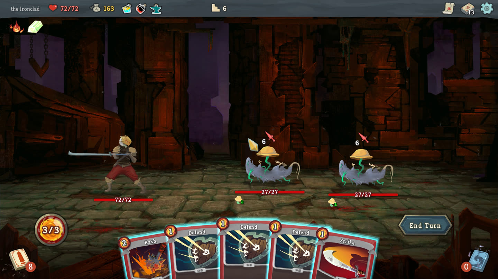

Find the AI that plans ahead
Independent, replicated measurements of how well language models make strategic decisions, played out over complete games of Slay the Spire.
Snapshot · Edition 3Results as of October 20, 2026
Ascension Bench Snapshot, edition 3
Snapshot measures how well language models play real Slay the Spire under one frozen interface, on private seeds, with replication. GPT-6.1 Sol places first in Snapshot edition 3 with a mean ascent of 266.5 out of 306, followed by DeepSeek V4.1 Flash, Claude Opus 5.5 (preliminary), MiMo V2.6 Flash and GPT-6 Luna. GPT-6.1 Sol cost $0.00480† per decision on average.
† Served from a subscription at no per-run charge: the cost is what the same tokens would cost at the vendor's API list price, read on 2026-10-14; the seconds per decision are as served under the subscription.
Slay the Spire 1 · Ironclad, climb from Ascension 0 to 5 · text interface · model only · edition 3
Mean ascent
Mean ascent per climb (0 to 306) · Higher is better · whisker: 95% interval
- OpenAI
- DeepSeek
- Anthropic
- Xiaomi
- Z.ai
- preliminary (open climbs)
Each band is one ascension: a climb scores 51 for each ascension it wins, plus the floor it reached in the game it lost, capped at A5 (max 306). The bar ends at the row's mean; the whisker is its 95% interval. A striped bar is preliminary: its climbs are still open, so its mean can still rise.
The climb
Each configuration plays climbs as the Ironclad, the game's starting character. A climb is a run of games on one seed that starts at Ascension 0, the base difficulty; each ascension adds a handicap, and every win moves the climb one ascension up. The climb measures how far a model gets before its first loss.
Start at Ascension 0
A climb begins at Ascension 0 as the Ironclad, on one of twenty private seeds.
Win to go up
Each win moves the climb up one ascension on the same seed: the next game is harder.
Lose to stop
The climb ends at its first loss, or with a win at Ascension 5, the top of the climb.
Score: ascent
51 for each ascension won, plus the floor reached in the game it lost: at most 306.
A climb starts at Ascension 0 on one of twenty private seeds; each win moves it up one ascension, and it ends at the first loss or at a win at Ascension 5. Its score is ascent, capped at A5 (max 306): 51 for each ascension won plus the floor reached in the game it lost. A row's number is the mean ascent over its climbs, with a 95% Student-t interval over the per-seed means (the climbs on a seed are averaged first; the seed is the unit). A row marked preliminary has open climbs: its mean can still rise.
Results
Results per rung
Games won out of games played at each ascension · edition 3
| configuration | climbs | mean ascent | A0 | A1 | A2 | A3 | A4 | A5 |
|---|---|---|---|---|---|---|---|---|
| GPT-6.1 Sol (high) | 40 | 266.5 | 38/40 | 37/38 | 35/37 | 33/35 | 32/33 | 26/32 |
| DeepSeek V4.1 Flash (high) | 40 | 68.5 | 13/40 | 6/13 | 4/6 | 2/4 | 1/2 | 1/1 |
| Claude Opus 5.5 (high) preliminary | 4 | ≥ 63.8 | 4/4 | 1/1+3 in progress | 1 in progress | – | – | – |
| MiMo V2.6 Flash (high) | 40 | 42.8 | 7/40 | 2/7 | 1/2 | 1/1 | 0/1 | – |
| GPT-6 Luna (high) | 80 | 42.7 | 11/80 | 3/11 | 2/3 | 1/2 | 1/1 | 1/1 |
| GPT-5.6 Luna (high) | 40 | 33.7 | 2/40 | 1/2 | 0/1 | – | – | – |
| GLM 5.3 Flash (high) | 40 | 31.0 | 2/40 | 0/2 | – | – | – | – |
| Claude Haiku 5.5 (high) | 120 | 18.4 | 0/120 | – | – | – | – | – |
By rung: games won out of games played at each ascension, over all the row's climbs; a climb reaches an ascension only by winning the one below. In progress: climbs that won the ascension below and have not finished this one, counted as neither win nor loss. A dash: no climb has reached that ascension. Games the benchmark itself stopped are not counted (see the first note under the table). Shading: the share of games won. A row's number of climbs opens its climbs, one line each.
| configuration | mean ascent (95%) | climbs (seeds × each) | A0 win rate | decisions per floor | cost per decision | effort | seconds per decision |
|---|---|---|---|---|---|---|---|
| GPT-6.1 Sol (high) | 266.5 [240.1, 292.9] | 40 (20 × 2) | 95% | 15.7 | $0.00480† | high | 2.7† |
| DeepSeek V4.1 Flash (high) | 68.5 [43.9, 93.1] | 40 (20 × 2) | 33% | 14.6 | $0.00134 | high | 4.3 |
| Claude Opus 5.5 (high) preliminary | ≥ 63.8 [23.2, 104.3] | 4 (4 × 1) | 100% | 14.8 | $0.01836 | high | 3.2 |
| MiMo V2.6 Flash (high) | 42.8 [28.4, 57.2] | 40 (20 × 2) | 18% | 15.9 | $0.00048 | high | 12.4 |
| GPT-6 Luna (high) | 42.7 [29.4, 55.9] | 80 (20 × 4) | 14% | 14.5 | $0.00027† | high | 4.3† |
| GPT-5.6 Luna (high) | 33.7 [26.3, 41.1] | 40 (20 × 2) | 5% | 14.0 | $0.00059† | high | 2.5† |
| GLM 5.3 Flash (high) | 31.0 [24.1, 37.9] | 40 (20 × 2) | 5% | 13.3 | $0.00052 | high | 13.4 |
| Claude Haiku 5.5 (high) | 18.4 [16.5, 20.4] | 120 (20 × 6) | 0% | 12.1 | $0.00027 | high | 0.9 |
Decision models
Decision models, in their own table: each picks from the list of actions, with no note and no reasoning, so their memory differs from the rows above and they are not on the chart. Jev 1.14 (last 10 actions) is a separately labelled variant, not a track-1 row: the same decision model, shown its last ten actions as well.
| configuration | mean ascent (95%) | climbs (seeds × each) | A0 win rate | decisions per floor | cost per decision | effort | seconds per decision |
|---|---|---|---|---|---|---|---|
| d1-ultra (decision API, no memory) | 17.3 [15.0, 19.7] | 40 (20 × 2) | 0% | 12.4 | $0.00005 | – | 0.2 |
| Jev 1.14 (decision API, no memory) | 15.8 [13.8, 17.8] | 40 (20 × 2) | 0% | 12.5 | $0.00006 | – | 0.2 |
| Jev 1.14 (decision API, last 10 actions) | 14.0 [12.1, 15.9] | 20 (20 × 1) | 0% | 11.4 | $0.00007 | – | 0.2 |
Notes on the table (14)
Which games count: every game that ends counts, a win or a loss, including games that stall in a loop for a long stretch (one winning game looped for 245 steps). Only a game the benchmark itself stopped is left out and rerun on the same seed and ascension: an infrastructure or harness failure, or an operator's stop at a batch's spend cutoff.
| games | started | completed | excluded: failure | excluded: spend cutoff | rerun |
|---|---|---|---|---|---|
| GPT-6.1 Sol (high) | 218 | 215 | 3 | 0 | 3 |
| DeepSeek V4.1 Flash (high) | 75 | 66 | 4 | 5 | 9 |
| Claude Opus 5.5 (high) | 5 | 5 | 0 | 0 | 0 |
| MiMo V2.6 Flash (high) | 71 | 51 | 4 | 16 | 20 |
| GPT-6 Luna (high) | 98 | 98 | 0 | 0 | 0 |
| GPT-5.6 Luna (high) | 43 | 43 | 0 | 0 | 0 |
| GLM 5.3 Flash (high) | 47 | 42 | 0 | 5 | 5 |
| Claude Haiku 5.5 (high) | 120 | 120 | 0 | 0 | 0 |
| d1-ultra (decision API, no memory) | 40 | 40 | 0 | 0 | 0 |
| Jev 1.14 (decision API, no memory) | 40 | 40 | 0 | 0 | 0 |
| Jev 1.14 (decision API, last 10 actions) | 20 | 20 | 0 | 0 | 0 |
| all rows | 777 | 740 | 11 | 26 | 37 |
Games per row: started, every game recorded; completed, ended with a win or a loss and scored; excluded, stopped by the benchmark itself, by an infrastructure or harness failure or by an operator's stop at a batch's spend cutoff; rerun, excluded games played again on the same seed and ascension and scored.
Columns: climbs gives each row's count, as seeds × climbs on each seed. The A0 win rate is the first game's. Decisions per floor: requests per floor climbed (each climb's model requests over the floors its games reached, averaged over climbs); a model that spends more decisions on each floor also spends more time and money per floor. Under each row, one mark per climb, sorted: the taller and darker, the higher the ascension it ended at; a mark with an outlined top is still climbing (it won its last game and waits for the next); a full solid mark won at the top. Cost and seconds per decision are per request, on the cost basis below (seconds: measured median).
“(high)” is the reasoning effort each configuration asks its vendor for; track 1 is the model alone, through the fixed text interface.
† Served from a subscription at no per-run charge: the cost is what the same tokens would cost at the vendor's API list price, read on 2026-10-14; the seconds per decision are as served under the subscription.
≥ Preliminary: the row has open climbs, so its mean can still rise. Claude Opus 5.5 (high): 1 climb won Ascension 1 and has not yet finished Ascension 2 (open); 3 climbs won Ascension 0 and have not yet finished Ascension 1 (open).
Cost basis: the vendor's list price, read on 2026-10-14 (GPT-6.1 Sol, GPT-6 Luna, GPT-5.6 Luna) and 2026-10-17 (Claude Opus 5.5, Claude Haiku 5.5); the charge recorded per request (DeepSeek V4.1 Flash, MiMo V2.6 Flash, GLM 5.3 Flash, d1-ultra, Jev 1.14, Jev 1.14, last 10).
Claude Haiku 5.5's row pools three A0 batches, 120 climbs: one under v10 (mean floor 18.9) and two under v10.1 (16.4 and 20.0), which changed nothing Haiku saw (the render diff touches none of its steps).
GPT-6 Luna's row pools two batches, 80 climbs, each climbing its own winners: one under v10 (mean ascent 49.3, one climb won at Ascension 5) and one under v10.1 (36.1).
Climbs per seed differ between rows: six for Claude Haiku 5.5, four for GPT-6 Luna, one for Jev 1.14 (decision API, last 10 actions), and two for the others; Claude Opus 5.5 has four climbs in all, one each on four seeds.
Claude Opus 5.5's row was pre-registered at four climbs, on seeds E01 to E04; its mean is over those four seeds.
Jev 1.14 and d1-ultra (decision API, no memory) are decision models: each picks from the list, with no note and no reasoning.
Jev 1.14 (decision API, last 10 actions) is a separately labelled variant, not a track-1 row: the same decision model, shown its last ten actions as well.
A win through Act 3's Secret Portal ends below floor 51 (one DeepSeek V4.1 Flash climb won Ascension 4 on floor 48); ascent counts every won ascension as 51, so averages of raw floors read such a win low.
This edition holds runs under two fingerprints: interface v10 and v10.1, a minor revision of it. v10.1 says which card reward is open when a rewards screen has two or more, and shows a rejected action as it was sent. Nothing else the model sees changed: replayed under v10.1, this edition's v10 runs differ at no more than 1.2% of any row's decision points.
Time & cost
A decision, one model request, costs from $0.00027† (GPT-6 Luna) to $0.01836 (Claude Opus 5.5). The quickest model answers in a median 0.9 seconds per decision (Claude Haiku 5.5).
Cost per decision
Average cost per model request (USD) · Lower is better
Cost basis: the vendor's list price, read on 2026-10-14 (GPT-6.1 Sol, GPT-6 Luna, GPT-5.6 Luna) and 2026-10-17 (Claude Opus 5.5, Claude Haiku 5.5); the charge recorded per request (DeepSeek V4.1 Flash, MiMo V2.6 Flash, GLM 5.3 Flash). † Served from a subscription at no per-run charge: the cost is what the same tokens would cost at the vendor's API list price, read on 2026-10-14; the seconds per decision are as served under the subscription.
Seconds per decision
Measured median per model request · Lower is better
Seconds from request to reply, the median over every decision the row made; † as served under a subscription.
Mean ascent vs. cost per decision
Cost per decision (USD, log scale) · Higher and further left is better
- Most attractive quadrant
- Pareto frontier
- OpenAI
- DeepSeek
- Anthropic
- Xiaomi
- Z.ai
Each point is one configuration; the bar is its 95% interval. Cost is per decision (one model request), on a log scale, at the vendor's list price (†: what a subscription's tokens would cost at that price). The dotted line is the Pareto frontier: no other configuration has both a higher mean ascent and a lower cost per decision. The shaded quadrant is cheaper than the median configuration and above its median mean ascent. A hollow point is preliminary (≥): its climbs are still open, so its mean can still rise and its bar ends in an arrowhead; it is left out of the frontier. Ascent is capped at A5 (max 306); each band is one ascension.
The chart's points as text
- GPT-6.1 Sol (high): mean ascent 266.5 [240.1, 292.9], $0.00480† per decision; on the frontier
- DeepSeek V4.1 Flash (high): mean ascent 68.5 [43.9, 93.1], $0.00134 per decision; on the frontier
- Claude Opus 5.5 (high): mean ascent ≥ 63.8 [23.2, 104.3], $0.01836 per decision; preliminary, open climbs
- MiMo V2.6 Flash (high): mean ascent 42.8 [28.4, 57.2], $0.00048 per decision; on the frontier
- GPT-6 Luna (high): mean ascent 42.7 [29.4, 55.9], $0.00027† per decision; on the frontier
- GPT-5.6 Luna (high): mean ascent 33.7 [26.3, 41.1], $0.00059† per decision
- GLM 5.3 Flash (high): mean ascent 31.0 [24.1, 37.9], $0.00052 per decision
- Claude Haiku 5.5 (high): mean ascent 18.4 [16.5, 20.4], $0.00027 per decision
Requests are sent uncached and priced at list price, or at the charge recorded per request (the cost basis). An offline analysis (2026-10-15) of the Ascension 0 traces of Claude Haiku 5.5, GPT-6.1 Sol and GPT-6 Luna found that too little of the prompt repeats for a cache to hit, so switching caching on as it stands would raise cost by 16 to 22 percent; a saving needs an interface change, deferred to a later edition.
How it works
- 1
The game
Real Slay the Spire, on a private seed.
- 2
The interface
The screen as text, the actions the game allows, and the model's own note. Frozen and fingerprinted.
- 3
The model
One request per decision, served by its own vendor.
- 4
The move
One action from the list, and a new note for next turn.

What the model is sent
1Character: Ironclad HP 72/72 Gold 163 Floor 6 (Act 1) Act boss: The Guardian2Relics: Burning Blood: At the end of combat, heal 6 HP.; Orichalcum: If you end your turn without Block, gain 6 Block.3Potions: slot 0: Ancient Potion: Gain 1 Artifact.; slot 1: Fear Potion: Apply 3 Vulnerable. (needs an enemy target); slot 2: Essence of Steel: Gain 4 Plated Armor.4Deck (13 cards): Strike (1) Attack: Deal 6 damage. x4 … 9 more cards5Enemies: [0] Fungi Beast HP 27/27 Block 0 Intent: Attack 6 Powers: Spore Cloud 2 (On death, applies 2 Vulnerable.) [1] Fungi Beast HP 27/27 Block 0 Intent: Attack 6 Powers: Spore Cloud 2 (On death, applies 2 Vulnerable.)6You: HP 72/72 Block 0 Energy 3/3 Powers: none7Hand (5): [1] Bash (2) Attack: Deal 8 damage. Apply 2 Vulnerable. [2] Defend (1) Skill: Gain 5 Block. [3] Defend (1) Skill: Gain 5 Block. [4] Defend (1) Skill: Gain 5 Block. [5] Strike (1) Attack: Deal 6 damage.8Legal actions (reply with exactly one): play 1 target 0 (play Bash on Fungi Beast) … 6 more actions end (end your turn) potion use 0 (drink Ancient Potion) … 6 more actions
- 1top bar: HP, gold, floor
- 2relics
- 3potions
- 4deck and piles
- 5enemies and their intents
- 6HP, block and energy
- 7the hand
- 8the actions it may take
What the model gets
The text a human would see on screen at that moment: the fight, the cards, the map, the shop. The list of actions the game allows. One note it writes to itself and reads back next turn. Nothing else: no hints, no history, no replay.
Why the numbers hold
The seeds are held out and private. Every model is served by its own vendor, through a frozen interface whose fingerprints are on this page; the table gives each row's number of climbs. Which games count is stated once, in the first note under the table, with each row's games. Intervals say what the seeds played can and cannot separate.
Earlier editions
Edition 2: earlier interface
Slay the Spire 1 · Ironclad, Ascension 0 · text interface · model only · edition 2
Measured under the earlier interface, fingerprint 4a21e17156a5f400…; not comparable to the edition above.
| configuration | mean floor (95%) | attempts (seeds × each) | win rate | decisions per attempt | cost per attempt | cost per decision | seconds per decision |
|---|---|---|---|---|---|---|---|
| GPT-6.1 Sol (high) | 49.4 [46.1, 52.7] | 40 (20 × 2) | 95% | 835 | $3.87† | $0.00463† | 4.4† |
| GPT-6 Luna (high) | 33.6 [29.8, 37.4] | 40 (20 × 2) | 8% | 508 | $0.13† | $0.00026† | 4.6† |
| GPT-5.6 Luna (high) | 33.5 [29.5, 37.5] | 40 (20 × 2) | 8% | 489 | $0.29† | $0.00060† | 2.9† |
| Claude Haiku 5.5 (high) | 18.2 [16.0, 20.5] | 40 (20 × 2) | 0% | 223 | $0.06 | $0.00027 | 1.2 |
Twenty private seeds, every attempt scored. Mean floor with its 95% interval; attempts as seeds × attempts on each seed; decisions per attempt, model requests on average; cost per attempt on the cost basis below, cost and seconds per decision (measured median) per request.
† Served from a subscription at no per-run charge: the cost is what the same tokens would cost at the vendor's API list price, read on 2026-10-14; the seconds per decision are as served under the subscription.
Cost basis: the vendor's list price, read on 2026-10-11 (Claude Haiku 5.5) and 2026-10-14 (GPT-6.1 Sol, GPT-6 Luna, GPT-5.6 Luna).
Edition 1: earlier interface
Slay the Spire 1 · Ironclad, Ascension 0 · text interface · model only · edition 1
Measured under the earlier interface, fingerprint dd5104516def0764…; not comparable to the edition above.
| configuration | mean floor (95%) | attempts (seeds × each) | win rate | decisions per attempt | cost per attempt | cost per decision | seconds per decision |
|---|---|---|---|---|---|---|---|
| DeepSeek V4.1 Flash (high) | 39.0 [35.6, 42.5] | 40 (20 × 2) | 18% | 610 | $1.01 | $0.00178 | 5.1 |
| GLM 5.3 Flash (high) | 29.9 [25.5, 34.2] | 40 (20 × 2) | 5% | 389 | $0.17 | $0.00043 | 5.3 |
| GPT-5.6 Luna (high) | 29.8 [26.4, 33.2] | 40 (20 × 2) | 3% | 1297 | $0.53 | $0.00055 | 1.9 |
| MiMo V2.6 Flash (high) | 29.1 [24.6, 33.7] | 40 (20 × 2) | 5% | 521 | $0.20 | $0.00038 | 9.7 |
| GPT-6 Luna (high) | 20.6 [15.6, 25.7] | 40 (20 × 2) | 5% | 2214 | $0.29 | $0.00023 | 2.2 |
Twenty private seeds, every attempt scored. Mean floor with its 95% interval; attempts as seeds × attempts on each seed; decisions per attempt, model requests on average; cost per attempt on the cost basis below, cost and seconds per decision (measured median) per request.
Cost basis: the charge recorded per request (every row).
While a stream is on, the benchmark's games are replayed live at twitch.tv/ascensionbench.